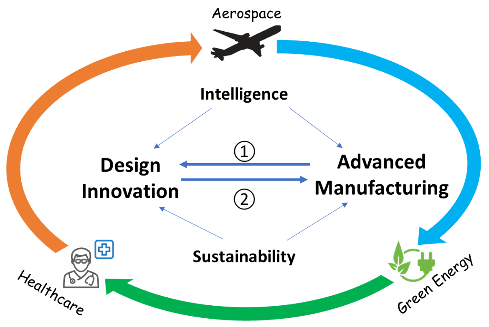

Research Overview
The research at the DIIM lab focuses on advancing fundamental technologies of additive manufacturing
and generative design with the help of Internet of Things, big data analytics, and bio-inspired design.
We aims at tackling critical challenges in aerospace, green energy, and healthcare, including energy efficiency,
complex system optimization, and personalization.
Research interests mainly include the following themes:
Computational design for additive manufacturing: Developing computational tools to support bio-inspired functional design with complexity of geometry, material, and functions.
Data-driven mass customization : Developing data-driven methods and pipelines to support mass customization of personalized healthcare product.
Digital twin-based complex system optimization: developing digital twins for complex systems to support more accurate simulations, predictive quality, energy efficiency, and lifecycle decision making.
Novel additive manufacturing processes and materials: developing novel AM platforms and materials with tunable properties to support functional applications, such as flexible electronics and soft robotics.

Sponsorship